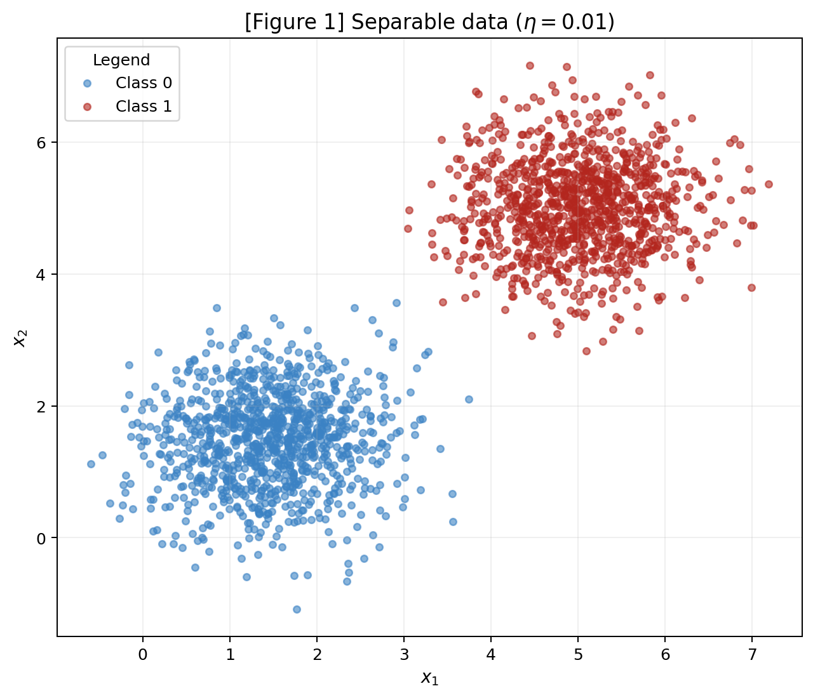
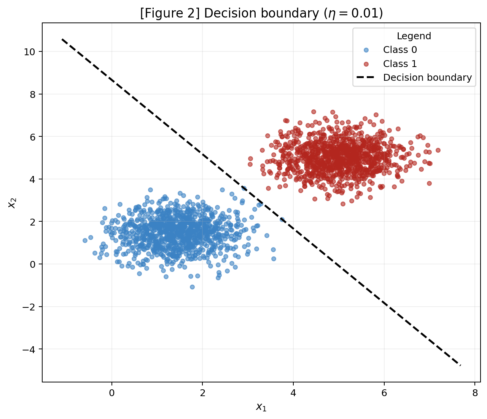
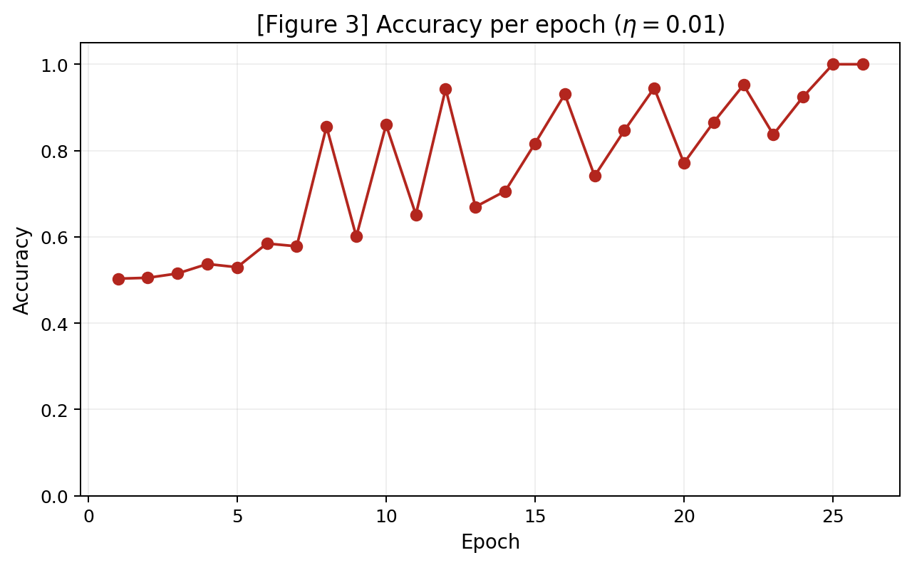
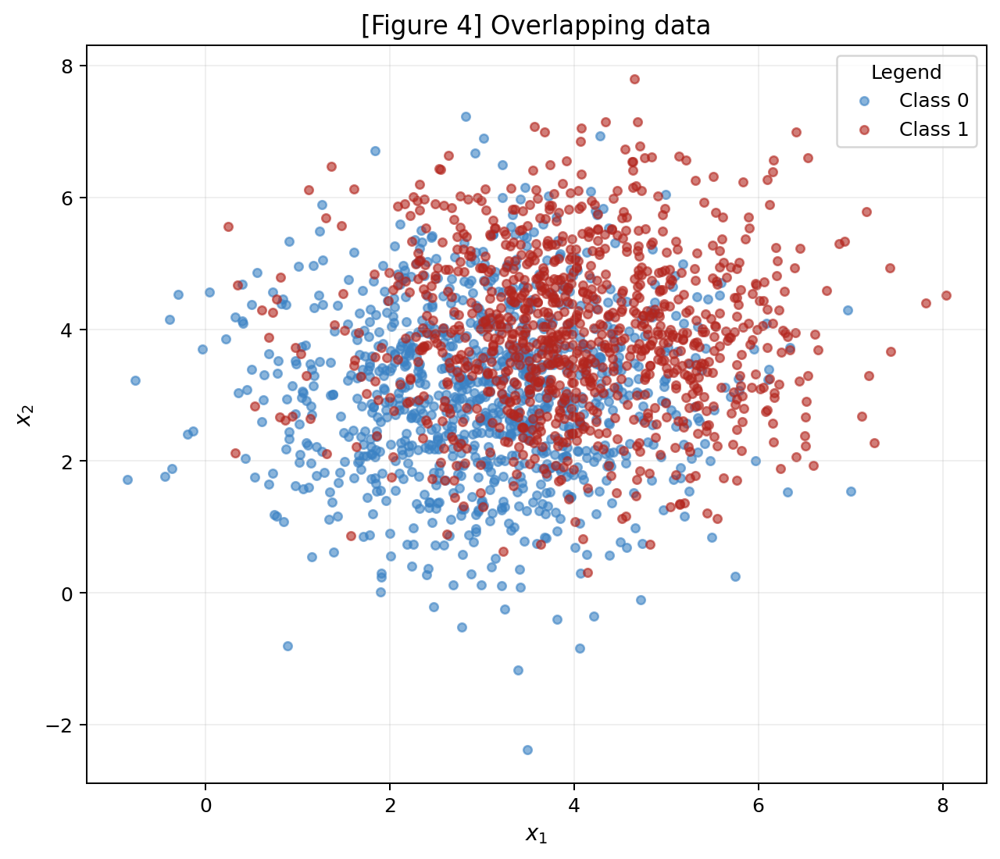
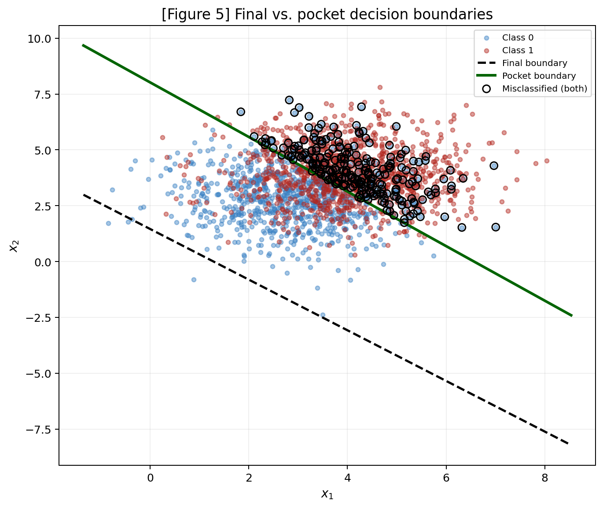
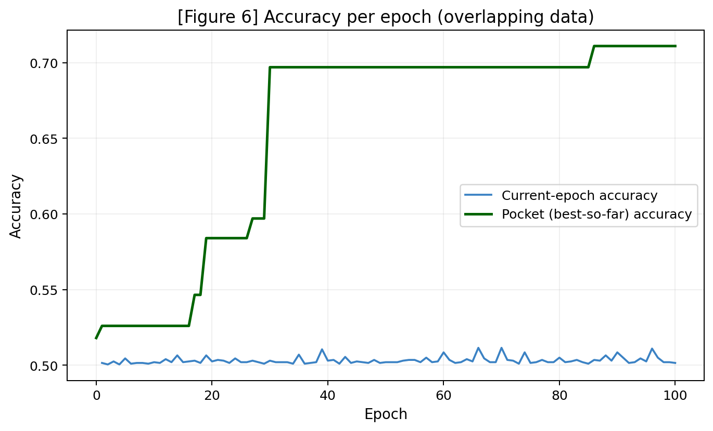

2 · Perceptron¶
This report studies separability: the same perceptron is trained on two datasets (one it can solve, one it cannot) and the interesting part is not that the second one fails, but how it fails.
Reproducibility
A single rng = np.random.default_rng(42) is created once and reused throughout the whole report. The full implementation is in perceptron_activity.py.
See perceptron_activity.py
from pathlib import Path
import numpy as np
import matplotlib.pyplot as plt
# A single RNG is reused throughout the whole report, as required by the activity.
rng = np.random.default_rng(42)
ROOT = Path(__file__).resolve().parents[1]
FIG_DIR = ROOT / "figures"
FIG_DIR.mkdir(parents=True, exist_ok=True)
plt.rcParams.update({
"figure.dpi": 150,
"savefig.dpi": 180,
"axes.titlesize": 13,
"axes.labelsize": 11,
"font.size": 10,
})
# ============================================================
# The perceptron (written from scratch, reused in Ex. 1 and Ex. 2)
# ============================================================
class Perceptron:
"""
Single-layer perceptron with a step activation and the
error-driven update rule for {0, 1} labels.
"""
def __init__(self, n_features, rng, lr=0.01):
"""
Configure the necessary values and define a initial value for them.
Non-zero initialization for the weights is required so that eta has an actual effect on the learned boundary.
"""
self.w = rng.normal(0, 0.01, size=n_features) # weights start small
self.b = 0.0 # bias start as 0
# leraning rate: when a mistake is observed in training, how much should the perceptron adjust?
self.lr = lr
def net_input(self, X):
"""
features (X) * features relevance (self.w) + bias (self.b) = net input
"""
return X @ self.w + self.b
def predict(self, X):
"""
Use the calculated net input to decide the classification of the observed input (X). Step
activation: there is a "step" at 0 that define the classification process.
- net_input >= 0 → class 1
- net_input < 0 → class 0
"""
return (self.net_input(X) >= 0).astype(int)
def accuracy(self, X, y):
"""
Calculate the accuracy of the perceptron. Compare if the pŕedicted value is equal to the actual classification
of the observed input.
"""
return float(np.mean(self.predict(X) == y))
def fit(self, X, y, max_epochs=100, track_pocket=False):
"""
Percepton training.
Train until a full epoch makes no update, or max_epochs is reached. Returns per-epoch
accuracy history (and pocket history if track_pocket=True).
"""
history = []
pocket_w, pocket_b, pocket_acc = self.w.copy(), self.b, self.accuracy(X, y)
pocket_history = [pocket_acc]
for epoch in range(max_epochs):
updated = False
# One pass over the dataset, in the given order.
for xi, yi in zip(X, y):
# Try to predict the value of y and calculate the error observed
y_hat = int(self.net_input(xi) >= 0)
error = yi - y_hat
# false positive: error = +1
# false negative: error = -1
# If it got wrong
if error != 0:
# Adjust weights and bias based on defined learning rate. The value of the error is responsable
# to give the "direction" of the adjustment
self.w += self.lr * error * xi
self.b += self.lr * error
updated = True
# Pocket the configuration fi it's the best seeing until now
if track_pocket:
acc_now = self.accuracy(X, y)
if acc_now > pocket_acc:
pocket_acc = acc_now
pocket_w = self.w.copy()
pocket_b = self.b
acc = self.accuracy(X, y)
history.append(acc)
if track_pocket:
pocket_history.append(pocket_acc)
# If perceptron didn't learn from the epoch: stop learning process
if not updated:
break
result = {"epochs": epoch + 1, "history": history}
if track_pocket:
result["pocket_w"] = pocket_w
result["pocket_b"] = pocket_b
result["pocket_history"] = pocket_history
result["pocket_best_epoch"] = int(np.argmax(pocket_history))
return result
# ============================================================
# Exercise 1 - Separable data
# ============================================================
def generate_separable_data():
"""
Generate the data that will be separable by the Perceptron.
Values are defined on the statement:
- Means are far apart relative to the spread
- 1000 samples per class (only two classes)
"""
mean0, cov0 = [1.5, 1.5], [[0.5, 0], [0, 0.5]]
mean1, cov1 = [5.0, 5.0], [[0.5, 0], [0, 0.5]]
X0 = rng.multivariate_normal(mean0, cov0, size=1000)
X1 = rng.multivariate_normal(mean1, cov1, size=1000)
X = np.vstack([X0, X1])
y = np.concatenate([np.zeros(1000), np.ones(1000)]).astype(int)
return X, y
def plot_scatter(X, y, title, path, boundary=None, misclassified=None):
"""
Function to generate a scatter for the plots in a consistent way throughout the exercises.
"""
fig, ax = plt.subplots(figsize=(7, 6), constrained_layout=True)
for cls, color, label in [(0, "#3B82C4", "Class 0"), (1, "#B3261E", "Class 1")]:
mask = y == cls
ax.scatter(X[mask, 0], X[mask, 1], s=18, alpha=0.6, color=color, label=label)
if misclassified is not None and misclassified.any():
ax.scatter(
X[misclassified, 0], X[misclassified, 1],
s=55, facecolors="none", edgecolors="black", linewidths=1.4,
label="Misclassified", zorder=5,
)
if boundary is not None:
w, b, style, blabel = boundary
x_vals = np.array([X[:, 0].min() - 0.5, X[:, 0].max() + 0.5])
if abs(w[1]) > 1e-9:
y_vals = -(w[0] * x_vals + b) / w[1]
ax.plot(x_vals, y_vals, style, linewidth=2, label=blabel, zorder=4)
ax.set_title(title)
ax.set_xlabel("$x_1$")
ax.set_ylabel("$x_2$")
ax.grid(alpha=0.2)
ax.legend(loc="best", title="Legend")
fig.savefig(path, bbox_inches="tight")
plt.close(fig)
def exercise_1():
# Generate the data
X, y = generate_separable_data()
# Figure 1
plot_scatter(X, y, "[Figure 1] Separable data ($\\eta = 0.01$)", FIG_DIR / "figure1.png")
# B, C: train with learning rate of 0.01
model = Perceptron(n_features=2, rng=rng, lr=0.01)
result = model.fit(X, y, max_epochs=100)
final_acc = model.accuracy(X, y)
preds = model.predict(X)
misclassified = preds != y
# Figure 2: decision boundary of Perceptron trained with separable data
plot_scatter(
X, y, "[Figure 2] Decision boundary ($\\eta = 0.01$)", FIG_DIR / "figure2.png",
boundary=(model.w, model.b, "k--", "Decision boundary"),
misclassified=misclassified,
)
# Figure 3: accuracy per epoch
fig, ax = plt.subplots(figsize=(7, 4.3), constrained_layout=True)
ax.plot(range(1, len(result["history"]) + 1), result["history"], marker="o", color="#B3261E")
ax.set_title("[Figure 3] Accuracy per epoch ($\\eta = 0.01$)")
ax.set_xlabel("Epoch")
ax.set_ylabel("Accuracy")
ax.set_ylim(0.0, 1.05)
ax.grid(alpha=0.2)
fig.savefig(FIG_DIR / "figure3.png", bbox_inches="tight")
plt.close(fig)
# D.2: re-run with bigger learning rate (eta = 1.0)
model_hi = Perceptron(n_features=2, rng=np.random.default_rng(42), lr=1.0)
result_hi = model_hi.fit(X, y, max_epochs=100)
acc_hi = model_hi.accuracy(X, y)
dir_low = model.w / np.linalg.norm(model.w)
dir_hi = model_hi.w / np.linalg.norm(model_hi.w)
return {
"w": model.w, "b": model.b,
"epochs": result["epochs"], "accuracy": final_acc,
"w_dir": dir_low,
"epochs_hi": result_hi["epochs"], "accuracy_hi": acc_hi,
"w_hi": model_hi.w, "b_hi": model_hi.b, "w_dir_hi": dir_hi,
}
# ============================================================
# Exercise 2 - Overlapping data
# ============================================================
def generate_overlapping_data():
"""
Generate the data that will NOT be separable by the Perceptron.
Values are defined on the statement:
- Means are close together and spread is three times larger
- 1000 samples per class (only two classes)
"""
mean0, cov0 = [3.0, 3.0], [[1.5, 0], [0, 1.5]]
mean1, cov1 = [4.0, 4.0], [[1.5, 0], [0, 1.5]]
X0 = rng.multivariate_normal(mean0, cov0, size=1000)
X1 = rng.multivariate_normal(mean1, cov1, size=1000)
X = np.vstack([X0, X1])
y = np.concatenate([np.zeros(1000), np.ones(1000)]).astype(int)
return X, y
def exercise_2():
# Generate the data
X, y = generate_overlapping_data()
# Figure 4
plot_scatter(X, y, "[Figure 4] Overlapping data", FIG_DIR / "figure4.png")
# B - train, keep pocket
model = Perceptron(n_features=2, rng=rng, lr=0.01)
result = model.fit(X, y, max_epochs=100, track_pocket=True)
final_w, final_b = model.w, model.b
final_acc = model.accuracy(X, y)
pocket_w, pocket_b = result["pocket_w"], result["pocket_b"]
pocket_model = Perceptron(n_features=2, rng=rng, lr=0.01)
pocket_model.w, pocket_model.b = pocket_w, pocket_b
pocket_acc = pocket_model.accuracy(X, y)
final_preds = model.predict(X)
final_mis = final_preds != y
pocket_preds = pocket_model.predict(X)
pocket_mis = pocket_preds != y
# Figure 5: both boundaries
fig, ax = plt.subplots(figsize=(7.5, 6.3), constrained_layout=True)
for cls, color, label in [(0, "#3B82C4", "Class 0"), (1, "#B3261E", "Class 1")]:
mask = y == cls
ax.scatter(X[mask, 0], X[mask, 1], s=14, alpha=0.45, color=color, label=label)
x_vals = np.array([X[:, 0].min() - 0.5, X[:, 0].max() + 0.5])
if abs(final_w[1]) > 1e-9:
ax.plot(x_vals, -(final_w[0]*x_vals+final_b)/final_w[1], "k--", linewidth=2, label="Final boundary")
if abs(pocket_w[1]) > 1e-9:
ax.plot(x_vals, -(pocket_w[0]*x_vals+pocket_b)/pocket_w[1], "-", color="darkgreen", linewidth=2.4, label="Pocket boundary")
both_mis = final_mis & pocket_mis
ax.scatter(X[both_mis, 0], X[both_mis, 1], s=45, facecolors="none",
edgecolors="black", linewidths=1.2, label="Misclassified (both)", zorder=5)
ax.set_title("[Figure 5] Final vs. pocket decision boundaries")
ax.set_xlabel("$x_1$")
ax.set_ylabel("$x_2$")
ax.grid(alpha=0.2)
ax.legend(loc="best", fontsize=8)
fig.savefig(FIG_DIR / "figure5.png", bbox_inches="tight")
plt.close(fig)
# Figure 6: accuracy curves
fig, ax = plt.subplots(figsize=(7.5, 4.5), constrained_layout=True)
epochs = range(1, len(result["history"]) + 1)
ax.plot(epochs, result["history"], label="Current-epoch accuracy", color="#3B82C4")
ax.plot(range(0, len(result["pocket_history"])), result["pocket_history"],
label="Pocket (best-so-far) accuracy", color="darkgreen", linewidth=2)
ax.set_title("[Figure 6] Accuracy per epoch (overlapping data)")
ax.set_xlabel("Epoch")
ax.set_ylabel("Accuracy")
ax.grid(alpha=0.2)
ax.legend()
fig.savefig(FIG_DIR / "figure6.png", bbox_inches="tight")
plt.close(fig)
return {
"final_w": final_w, "final_b": final_b, "final_acc": final_acc,
"pocket_w": pocket_w, "pocket_b": pocket_b, "pocket_acc": pocket_acc,
"pocket_best_epoch": result["pocket_best_epoch"],
}
if __name__ == "__main__":
print("=== EXERCISE 1 ===")
ex1 = exercise_1()
print(f"Final w = {ex1['w']}, b = {ex1['b']:.4f}")
print(f"Epochs to convergence = {ex1['epochs']}, accuracy = {ex1['accuracy']:.4f}")
print(f"w / ||w|| (eta=0.01) = {ex1['w_dir']}")
print(f"eta=1.0 -> epochs = {ex1['epochs_hi']}, accuracy = {ex1['accuracy_hi']:.4f}")
print(f"w (eta=1.0) = {ex1['w_hi']}, b = {ex1['b_hi']:.4f}")
print(f"w / ||w|| (eta=1.0) = {ex1['w_dir_hi']}")
print("\n=== EXERCISE 2 ===")
ex2 = exercise_2()
print(f"Final w = {ex2['final_w']}, b = {ex2['final_b']:.4f}, acc = {ex2['final_acc']:.4f}")
print(f"Pocket w = {ex2['pocket_w']}, b = {ex2['pocket_b']:.4f}, acc = {ex2['pocket_acc']:.4f}")
print(f"Pocket best found at epoch = {ex2['pocket_best_epoch']}")
Exercise 1¶
Separable Data: the case the perceptron was designed for¶
A — Generate the data¶
Two classes (\(c0\) and \(c1\)) of 2000 total points (1000 each) were generated from multivariate normal distributions with the following parameters:
Both classes share the same covariance matrix:
The means are far apart relative to the distributions' spread, making the classes linearly separable with at most a handful of overlapping points, as observed in Figure 1.

B — Implement the perceptron¶
The perceptron was implemented from scratch as the Perceptron class in the code above (perceptron_activity.py).
- Prediction is \(\hat{y} = \text{step}(\mathbf{w}\cdot\mathbf{x}+b)\);
- Update Rule is \(\mathbf{w} \leftarrow \mathbf{w} + \eta \cdot (y-\hat{y}) \cdot \mathbf{x}\) and \(b \leftarrow b + \eta \cdot (y-\hat{y})\);
- Weights are initialized from
rng.normal(0, 0.01, size=2)(non-zero) with \(\eta = 0.01\); - Training stops after a full epoch with no updates or after 100 epochs.
C — Train and measure¶
Training converged in 26 epochs, reaching 100% accuracy, with the following final parameters


D — Analysis¶
1. Why does separable data converge quickly?
Each update only fires on a misclassified sample, and it moves \(\mathbf{w}, b\) in the direction that fixes that particular mistake (\(\mathbf{w} \leftarrow \mathbf{w} + \eta \cdot (y-\hat y) \cdot \mathbf{x}\)). Because the two clouds are well separated, early updates already push the boundary toward the gap between them, so the fraction of misclassified points shrinks fast each epoch. As Figure 3 shows, accuracy rises steeply in the first handful of epochs and then flattens once the boundary sits inside the margin between clouds. From that point on, most samples produce no update at all, and only a few borderline points keep nudging the boundary until it clears every point.
2. Re-run the training with \(\eta = 1.0\), changing nothing else. Report the epoch count and the final accuracy, and compare the direction of \(\mathbf{w}\) (that is, \(\mathbf{w} / \|\mathbf{w}\|\)) against the run. Both runs should reach 100%, but by different boundaries — explain what controls, given that every update adds to weights that started at a magnitude of about.
With \(\eta = 1.0\), training converged in 33 epochs, also reaching 100% accuracy, with
Comparing boundary directions:
The two directions are close but not identical. Both runs reach 100% accuracy, but at slightly different boundaries, because \(\eta\) controls the step size of each correction, not just its' scale. Since every update adds \(\eta \cdot \mathbf{x}\) to weights that start at magnitude \(\approx 0.01\), a large \(\eta\) makes the very first few updates dominate the final direction of \(\mathbf{w}\) (the small random initialization becomes negligible). In comparsion, a small \(\eta\) lets many more updates accumulate, each contributing more evenly and tracing out a boundary shaped by more of the dataset's structure before saturating.
Both boundaries lie inside the margin and correctly separate the data, but they are not the same line. \(\eta\) determines how quickly the weight vector commits to a direction, not merely a global rescaling once training has actually started from a non-zero point.
3. Now argue what would have happened from \(\mathbf{w}=\mathbf{0}\), \(b=0\). Show algebraically that running the whole training twice, with \(\eta_{1}\) and \(\eta_{2}\), produces weights that differ only by the constant factor \(\eta_{1} / \eta_{2}\) — so the decision boundary and the epoch count are identical and \(\eta\) has no effect at all. This is why item B forbids the zero start.
Consider training twice from the zero start with rates \(\eta_1\) and \(\eta_2\), using the same sequence of samples and the same mistakes at every step. Which holds here, since with \(\mathbf{w}=0\) the prediction \(\hat y = \text{step}(b)\) is identical for every sample regardless of \(\eta\), so both runs make the exact same sequence of correct/incorrect calls. After \(t\) updates, by induction:
Because the sequence of \((y_k - \hat y_k)\) is identical for both runs, \(\mathbf{w}^{(t)}_{\eta_2} = \frac{\eta_2}{\eta_1}\,\mathbf{w}^{(t)}_{\eta_1}\) and likewise for \(b\). Since the decision boundary is the set \(\{\mathbf{x} : \mathbf{w}\cdot\mathbf{x}+b=0\}\), multiplying both \(\mathbf{w}\) and \(b\) by the same positive constant \(\eta_2/\eta_1\) leaves the boundary geometrically unchanged, and the predictions \(\hat y_k = \text{step}(\mathbf{w}\cdot\mathbf{x}_k+b)\) at every step are therefore also unchanged, so the epoch count is identical too. This is reiterates why an all-zero start is forbidden: only a non-zero initialization breaks that proportionality and lets \(\eta\) actually influence which boundary is learned.
Exercise 2¶
Overlapping Data: the case the perceptron cannot solve¶
A — Generate the data¶
Two classes (\(c0\) and \(c1\)) of 2000 total points were generated from multivariate normal distributions with the following means:
Both classes share the same covariance matrix:
This covariance corresponds to three times the spread used in Exercise 1. Combined with the proximity of the class means, this causes the two clouds to overlap heavily, making them not linearly separable as shown in Figure 4.

B — Train, keeping the best weights¶
The Exercise 1 implementation was reused unchanged, with \(\eta = 0.01\) and the 100-epoch cap, adding only the pocket bookkeeping. The latter meaning the copy of \((\mathbf{w},b)\) whenever the full-dataset accuracy improves on the best seen so far.
| Weights | \(\mathbf{w}\) | \(b\) | Accuracy |
|---|---|---|---|
| Final (last iterate) | \([0.0545,\ 0.0480]\) | \(-0.0700\) | 50.15% |
| Pocket (best-so-far) | \([0.0107,\ 0.0087]\) | \(-0.0700\) | 71.10% |
As expected, the final-iterate accuracy is close to guessing, while the pocket weights land close to the ~73% (ceiling a straight line can achieve on this data).
C — Figures¶


D — Analysis¶
1. The best straight line for this data scores about 73%. Your pocket weights should land close to that; your final weights should not. Explain the gap. Where does the final boundary sit relative to the data cloud, and why does the training loop leave it there?
Every mistake still moves \(b\) by \(\pm\eta\) (or, in this case, \(\pm0.01\)), but moves \(\mathbf{w}\) by \(\eta\ \cdot \mathbf{x}\) (which is \(\approx 0.01 \times 5 = 0.05\) in magnitude, since \(\lVert \mathbf{x}\rVert \approx 5\) for this data). This means that there is an order of magnitude larger step than the one applied to \(b\). Because the data is not separable, the loop never stops correcting, and each class keeps contributing mistakes of opposite sign to \(\mathbf{w}\).
Since the two clouds are not far from being symmetric around a similar direction, these updates to \(\mathbf{w}\) partially cancel over time, while \(b\)'s smaller, less symmetric drift accumulates a steady bias. The final boundary in Figure 5 ends up pushed well below the data cloud, sitting in the region where it currently classifies about half the points correctly (essentially by luck of where training happened to stop, rather than by having found a good separator). The pocket boundary, in contrast, is anchored to the single best moment the perceptron passed through during its endless drifting, so it reflects a genuinely reasonable linear split of the two overlapping clouds.
2. Compare Figure 3 with Figure 6. In Exercise 1 the accuracy curve settles; here it does not. What does the perceptron convergence theorem guarantee, and which of its assumptions does this dataset violate?
In Exercise 1 the accuracy curve settles at 100% and stays there because the perceptron convergence theorem guarantees that, for linearly separable data, the perceptron finds a separating hyperplane in a finite number of updates. Figure 6 never settles because Exercise 2s' data violates the theorem's key assumption (linear separability) so there is no set of weights that produces zero error, and the update rule keeps firing forever, oscillating around whatever boundary is "least bad" at each moment instead of actually converging.
3. Does adding more epochs fix it? Does a smaller \(\eta\)? Justify your answer from the update rule rather than by trial and error.
No, on either count. More epochs cannot help because the underlying issue is not insufficient training time: it is that no linear boundary can achieve zero error on overlapping Gaussians, so the update rule has no stationary point to converge to. Running longer simply continues the same non-convergent drift seen in Figure 6.
A smaller \(\eta\) would shrink the size of each individual step (both to \(\mathbf{w}\) and to \(b\)) but would not change which samples are misclassified at any given boundary, nor remove the endless stream of corrective updates from both classes. It would only slow down how fast the drift happens, without changing the ~73% ceiling a straight line can reach on this data.
Results summary¶
| # | Quantity | Value |
|---|---|---|
| 1 | Exercise 1 — final \(\mathbf{w}\) and \(b\) | \(\mathbf{w}=[0.0505,\ 0.0289]\), \(b=-0.2500\) |
| 2 | Exercise 1 — epochs to convergence | 26 |
| 3 | Exercise 1 — final accuracy | 100% |
| 4 | Exercise 1 — epochs and final accuracy with \(\eta=1.0\) | 33 epochs, 100% accuracy |
| 5 | Exercise 2 — final \(\mathbf{w}\) and \(b\) | \(\mathbf{w}=[0.0545,\ 0.0480]\), \(b=-0.0700\) |
| 6 | Exercise 2 — accuracy of the final weights | 50.15% |
| 7 | Exercise 2 — accuracy of the pocket weights | 71.10% |
| 8 | Exercise 2 — epoch at which the pocket best occurred | 86 |